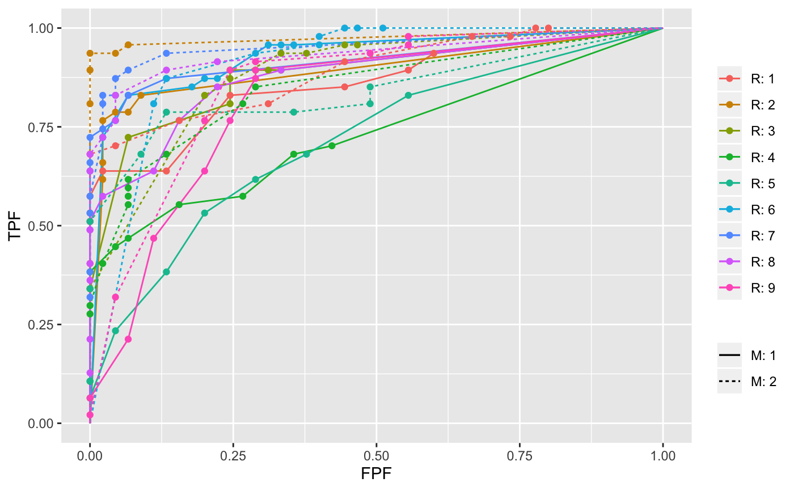
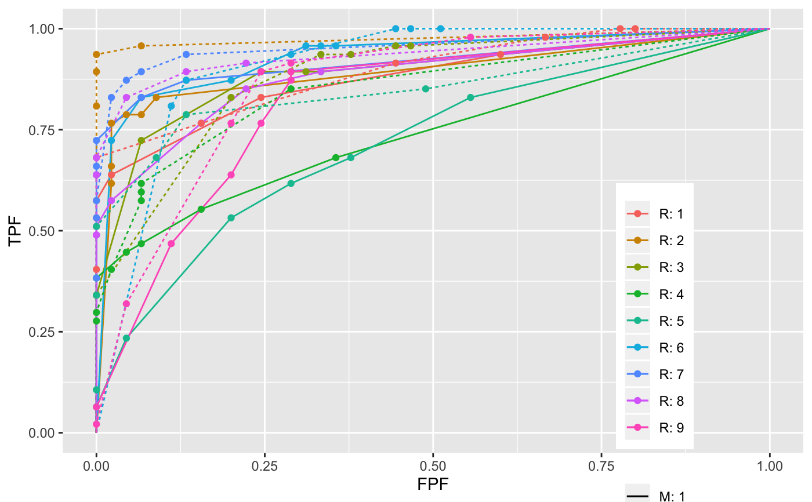
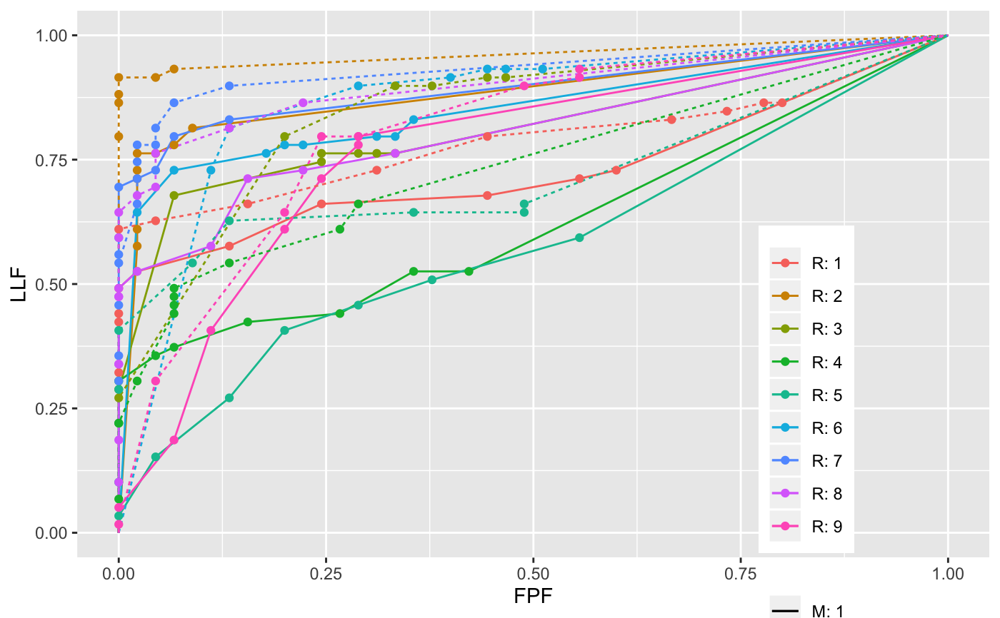
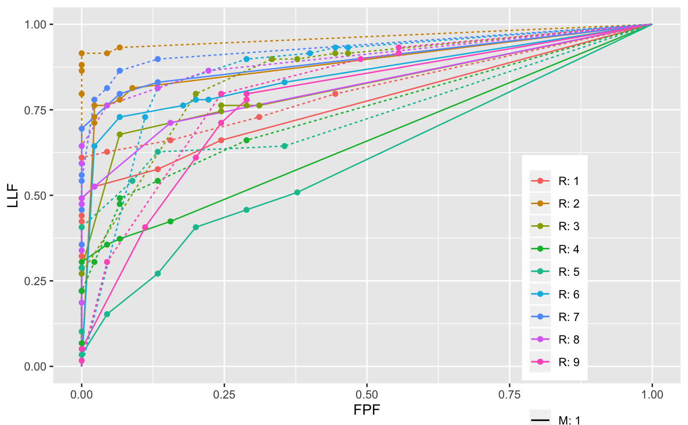

DfBinDataset.RdBins continuous (i.e. floating point) or quasi-continuous (e.g. integers 0-100) ratings in a dataset and returns the corresponding binned dataset in which the ratings are integers 1, 2,...., with higher values representing greater confidence in presence of disease
DfBinDataset(dataset, desiredNumBins = 7, opChType)
| dataset | The dataset to be binned, with structure as in |
|---|---|
| desiredNumBins | The desired number of bins. The default is 7. |
| opChType | The operating characteristic relevant to the binning operation:
|
The binned dataset
For small datasets the number of bins may be smaller than desiredNumBins.
The algorithm needs to know the type of operating characteristic
relevant to the binning operation. For ROC the bins are FP and TP counts, for
FROC the bins are NL and LL counts, for AFROC the bins are FP and LL counts,
and for wAFROC the bins are FP and wLL counts. Binning is generally
employed prior to fitting a statistical model, e.g., maximum likelihood, to the data.
This version chooses ctffs so as to maximize empirical AUC (this yields a
unique choice of ctffs which gives the reader the maximum deserved credit).
Miller GA (1956) The Magical Number Seven, Plus or Minus Two: Some limits on our capacity for processing information, The Psychological Review 63, 81-97
Chakraborty DP (2017) Observer Performance Methods for Diagnostic Imaging - Foundations, Modeling, and Applications with R-Based Examples, CRC Press, Boca Raton, FL. https://www.crcpress.com/Observer-Performance-Methods-for-Diagnostic-Imaging-Foundations-Modeling/Chakraborty/p/book/9781482214840
# \donttest{ binned <- DfBinDataset(dataset05, opChType = "ROC") PlotEmpiricalOperatingCharacteristics(dataset05, trts= c(1,2), rdrs = seq(1,9), opChType = "ROC")$Plotbinned <- DfBinDataset(dataset05, opChType = "AFROC") PlotEmpiricalOperatingCharacteristics(dataset05, trts= c(1,2), rdrs = seq(1,9), opChType = "AFROC")$PlotPlotEmpiricalOperatingCharacteristics(binned, trts= c(1,2), rdrs = seq(1,9), opChType = "AFROC")$Plot# } # \donttest{ ## takes longer than 5 sec on OSX ## library(ggplot2) ## dataset <- SimulateRocDataset(K1 = 5000, K2 = 7000, a = 1, b = 0.5, seed = 123) ## datasetB <- DfBinDataset(dataset, desiredNumBins = 7, opChType = "ROC") ## fomOrg <- as.matrix(UtilFigureOfMerit(dataset, FOM = "Wilcoxon"), nrow = 2, ncol = 9) ## print(fomOrg) ## fomBinned <- as.matrix(UtilFigureOfMerit(datasetB, FOM = "Wilcoxon"), nrow = 2, ncol = 9) ## print(fomOrg) ## cat("fomOrg = ", mean(fomOrg), "\n") ## cat("fomBinned = ", mean(fomBinned), "\n") ## x <- PlotEmpiricalOperatingCharacteristics(dataset, opChType = "ROC")$Plot ## y <- PlotEmpiricalOperatingCharacteristics(datasetB, opChType = "ROC")$Points ## fpf <- y$genAbscissa[-1];fpf <- fpf[-length(fpf)] ## tpf <- y$genOrdinate[-1];tpf <- tpf[-length(tpf)] ## plotOpPnts <- rbind(data.frame(fpf = fpf, tpf = tpf)) ## x <- x + geom_point(data = plotOpPnts, aes(x = fpf, y = tpf), size = 4) ## print(x) ## xx <- PlotEmpiricalOperatingCharacteristics(datasetB, opChType = "ROC") ## print(xx$Points) # }